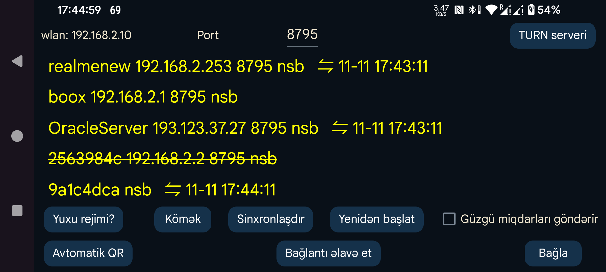

Başqa qurğuya məlumat göndərmək və ya ondan məlumat almaq üçün istifadə olunur. Digər Android qurğusunda işləyən Juggluco ilə əlaqə yaradaraq eyni məlumatları orada da göstərə bilərsiniz. Skan məlumatları alındıqdan sonra Güzgü qurğusu sensora Bluetooth vasitəsilə də qoşula bilər. İki qurğunun eyni vaxtda sensora qoşulmağa çalışmasının qarşısını almaq üçün Axın göstəriciləri IP/TCP vasitəsilə gəldikdə sol menyu → Sensor → Bluetooth-dan istifadə et seçimi avtomatik söndürülür.
Bu ekranda WLAN sözündən sonra həmin qurğunun yerli Wi-Fi IP ünvanı görünür. Ev şəbəkəsində qoşulacağınız digər qurğuda bu ünvanı daxil edin. Uzaqdan qoşulursunuzsa, həmin məlumat modeminizin tənzimlənməsində lazım ola bilər.
Port bölməsində Juggluco-nun daxil olan TCP bağlantılarını dinlədiyi portu dəyişə bilərsiniz.
Bağlantı əlavə et düyməsi ilə hansı qurğulara və hansı üsulla qoşulacağınızı müəyyənləşdirin.
Android-də batareya optimallaşdırmaları və arxa plan məhdudiyyətləri sabit şəbəkə bağlantılarını poza bilər. Yuxu rejimi düyməsi həmin tənzimləmələri dəyişməyə kömək edir.
Güzgü miqdarları göndərir: Bu Juggluco digər qurğudan dərman, yemək və fəaliyyət miqdarlarını alırsa, həmin qeydləri burada əlavə etmək və dəyişmək düzgün deyil. Bu seçim işarələndikdə onların bu qurğuda əlavə və redaktə edilməsi bloklanır.
Sinxronlaşdır: Qoşulmuş qurğu mövcuddursa yeni məlumatları ora göndərir və ya ondan yeni məlumatları tələb edir.
Yenidən başlat: Mövcud bağlantını bağlayıb yenisini yaradır.
Avtomatik QR: Bu telefondakı bütün məlumatları digər Juggluco-ya göndərmək üçün bağlantı məlumatları yaradır. Digər telefonda sol menyu → Foto vasitəsilə QR kodunu skan etmək lazımdır.
Wi-Fi (yalnız Wear OS): Seçim söndürülübsə, Wear OS batareyaya qənaət məqsədilə müəyyən müddətdən sonra Wi-Fi-ni avtomatik söndürür və Juggluco telefonla saat arasındakı əlaqəni Bluetooth vasitəsilə davam etdirir. Aktiv edildikdə Wear OS-dən Wi-Fi-ni açıq saxlamaq xahiş olunur; onun sönməsi gecikə bilər, lakin yenə də sönə bilər. Adətən bu seçimi aktivləşdirmək lazım deyil. Wear OS hazırlayanlar Wi-Fi-nin davamlı açıq qalmasının batareya sərfini əhəmiyyətli dərəcədə artıracağını hesab edirlər.
Mövcud bağlantılar siyahıda göstərilir. Hər birinin etiketi, IP portu və son uğurlu sinxronlaşdırmanın ayı, günü və vaxtı göstərilir.
Bağlantının istifadə üsulunu bildirən qısaltmalar:
Əlavə məlumat üçün Bağlantı əlavə et kömək səhifəsini və Güzgü haqqında təlimatı oxuyun.
Windows, macOS və ya Linux kompüterində Android emulyatoru (məsələn, Genymotion) vasitəsilə Juggluco-nu işlədə bilərsiniz. Linux mühitində (o cümlədən Windows altında Ubuntu istifadə etdikdə) Waydroid də uyğundur. Emulyatordakı Juggluco sensorla qoşulmuş Android telefonundan Güzgü bağlantısı ilə məlumat alır.
Android Studio emulyatorunda və Genymotion-da iki barmaqla yaxınlaşdırma/uzaqlaşdırma hərəkətini Ctrl düyməsini basılı saxlayıb siçanı hərəkət etdirməklə simulyasiya edə bilərsiniz. Waydroid bunu təmin etmir, lakin Juggluco həmin hərəkəti özü həyata keçirə bilir.